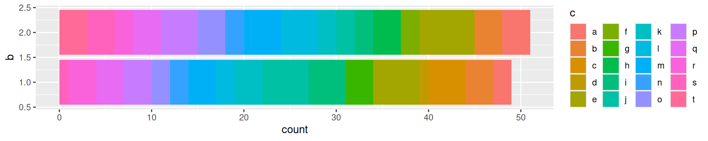
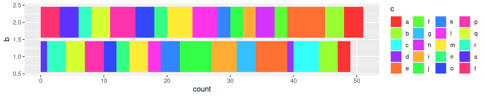

rbindlist from data.table package for a memory-optimized and faster do.call(rbind, list(..)).system2 instead of system to run a command. It’s more portable apparently.options(rpubs.upload.method = "internal").strptime(x, "%a %b %d %T PST %Y'") and difftime and then as.Double(d, units="hours").Using & and | operators, R tries all the conditions and then performs the operations.
However, sometimes we would like a smarter sequential assessment for AND.
For example, we get an error if we run:
x = NULL
if(!is.null(x) & x>10) message("so big !")That’s because it tries to do x>10 when x is NULL.
Here, what we want is &&:
x = NULL
if(!is.null(x) && x>10) message("so big !")
x = 17
if(!is.null(x) && x>10) message("so big !")Now it won’t try to do x<10 if !is.null(x) is not true (because what’s the point, anything “False AND …” is for sure False).
Caution, && doesn’t work on vectors (it will only test the first element).
To avoid memory problems, I sometimes had to read a file by chunk. (This is usually not the right way to do things, more of a quick-and-dirty way to try something to gauge if it’s worth implementing something in Rcpp etc.)
Here are bits of code to help with that.
## open connection to file
con = gzfile(args[1], 'r')
## read one line at a time
while(length((line.r=readLines(con, 1)))>0){
## something on line.r (character containing the line), e.g.
line.s = unlist(strsplit(line.r, '\t'))
...
}Using readLines(con, N) with larger N, a larger chunk of the file can be read at a time.
In that case, it can be useful to parse the chunk (vector of character element) into a data.frame using read.table/read.csv with:
lines.r=readLines(con, 100)
nodes.df = read.csv(textConnection(lines.r), as.is=TRUE, header=TRUE)pdf("g.pdf", 9, 7)png("g.png", 1300, 1000, res=200)options(device=function() pdf(width=9, height=7)) to set the default device (e.g. remote graphs).When I need many colors and want to distinguish consecutive classes (e.g. bar graphs or overlapping clusters), I use an interleaved rainbow-like palette:
interk <- function(x, k=4){ # Interleaves elements in x
idx = unlist(lapply(1:k, function(kk) seq(kk, length(x), k)))
x[idx]
}
pal = interk(rainbow(20, s=.8), 5)For example:
ggplot(bar.df, aes(x=x, fill=c)) + geom_bar() + coord_flip() +
guides(fill=guide_legend(ncol=4))
ggplot(bar.df, aes(x=x, fill=c)) + geom_bar() + coord_flip() +
guides(fill=guide_legend(ncol=4)) +
scale_fill_manual(values=pal)
stat_density(geom="line") (and eventually position="dodge" if plotting several groups).guides(colour=guide_legend(override.aes=list(alpha=1)))guides(fill=guide_legend(ncol=4))guides(fill=guide_legend(keyheight=2))geom_text(show.legend=FALSE)position=position_dodge(.9, preserve='single')theme(legend.box='vertical')theme(legend.margin=margin(-5))In general we can use grid.arrange.
For example:
p1 = ggplot(...) + ...
p2 = ggplot(...) + ...
p3 = ggplot(...) + ...
grid.arrange(p1, p2, p3, heights=c(2,1), layout_matrix=rbind(c(1,1), 2:3))We can add A), B) etc as a title for each panel. To reposition them, for example near the corner:
p1 = p1 + ggtitle('A') + theme(plot.title=element_text(hjust=-.05, vjust=-3))hjust/vjust may need to be adjusted to fit the graph type and aspect ratio.
Sometimes we might want to have two graphs, one on top of the other, with their x-axis aligned.
One easy way is to use the tracks function in the ggbio package.
However, I don’t really like this package because it sometimes conflicts with ggplot2 (boo!) and you end up having to specify ggplot2:: to the functions to avoid obscure errors.
I found another way on the internet:
library(ggplot2)
library(gridExtra)
p1 <- ggplot(...
p2 <- ggplot(...
p1 <- ggplot_gtable(ggplot_build(p1))
p2 <- ggplot_gtable(ggplot_build(p2))
maxWidth = unit.pmax(p1$widths[2:3], p2$widths[2:3])
p1$widths[2:3] <- maxWidth
p2$widths[2:3] <- maxWidth
grid.arrange(p1, p2, heights = c(3, 2))Otherwise, there is always adding manually margins to align them…
ggp.panels = grid.arrange(
ggp.1 + theme(axis.text.x=element_blank(), axis.title.x=element_blank(),
plot.margin = margin(.1,.1,.1,.35, "cm")),
ggp.2 + theme(plot.margin = margin(.1,1.5,.1,.8, "cm")),
heights=c(2,3))library(extrafont)
font_import(pattern='Comic')
loadfonts()
qplot(x=rnorm(100)) + geom_histogram() + theme(text=element_text(family="Comic Sans MS")) + ggtitle('Ouch')fonts() to check which fonts are imported by extrafont, names(pdfFonts()) to list the fonts available (loaded).
More in this blog post.
waffle package provides a waffle and iron function. For example:
iron(
waffle(c(thing1=0, thing2=100), rows=5, keep=FALSE, size=0.5, colors=c("#af9139", "#544616")),
waffle(c(thing1=25, thing2=75), rows=5, keep=FALSE, size=0.5, colors=c("#af9139", "#544616"))
)I used ganttrify for a grant. I tweaked the default output a bit to show a legend for the colors.
library(ganttrify)
library(ggplot2)
project = read.table('gantt.tsv', as.is=TRUE, header=TRUE, sep='\t')
## set the order of the activities from the order in the TSV file
project$wp = factor(project$wp, unique(project$wp))
spots = read.table('gantt-spots.tsv', as.is=TRUE, header=TRUE, sep='\t')
ggp = ganttrify(project=project, spots=spots,
project_start_date="2024-01", month_breaks=6,
mark_years=TRUE, hide_wp=TRUE, label_wrap=40,
line_end = "butt", axis_text_align = "right") +
theme(legend.position='top', legend.title=element_blank(),
legend.margin=margin(0,100,-15)) +
scale_color_brewer(palette='Dark2', breaks=unique(project$wp)) +
guides(color=guide_legend(ncol=3))
ggp \ to force a line break and add vertical spacing (e.g. in slides).To define knitr parameters, I add a chunk at the beginning of the Rmarkdown document. For example:
```{r include=FALSE}
knitr::opts_chunk$set(echo=FALSE, message=FALSE, warning=FALSE, fig.width=10)
```To get this feature on an HTML report, add anywhere (or by including an html file e.g. with includes: before_body:)
<script src="https://ajax.googleapis.com/ajax/libs/jquery/3.1.1/jquery.min.js"></script>
<style>
.zoomDiv {
opacity: 0;
position:fixed;
top: 50%;
left: 50%;
z-index: 50;
transform: translate(-50%, -50%);
box-shadow: 0px 0px 50px #888888;
max-height:100%;
overflow: scroll;
}
.zoomImg {
width: 100%;
}
</style>
<script type="text/javascript">
$(document).ready(function() {
$('body').prepend("<div class=\"zoomDiv\"><img src=\"\" class=\"zoomImg\"></div>");
// onClick function for all plots (img's)
$('img:not(.zoomImg)').click(function() {
$('.zoomImg').attr('src', $(this).attr('src'));
$('.zoomDiv').css({opacity: '1', width: '100%'});
});
// onClick function for zoomImg
$('img.zoomImg').click(function() {
$('.zoomDiv').css({opacity: '0', width: '0%'});
});
});
</script>All the images can then be clicked on to display a zoomed in display. Click again on the image to close the zoomed image.
Note: It required pandoc version >2 to load the javascript lib.
Other options I haven’t tried yet:
Some useful options to put in the YAML header:
title: The Title
subtitle: The Subtitle
author: Jean Monlong
date: 11 Oct. 2016
output:
beamer_presentation:
slide_level: 2
fig_width: 7
includes:
in_header: header.tex
toc: true
dev: png
keep_tex: trueslide_level defines the header level to be considered as a new slide.To add slide count I put this on the header.tex:
\setbeamertemplate{navigation symbols}{}
\setbeamertemplate{footline}[page number]To resize wide tables I use a hook that surround a chunk with \resizebox command, defined in the non-included chunk:
```{r, include=FALSE}
knitr::knit_hooks$set(resize = function(before, options, envir) {
if (before) {
return('\\resizebox{\\textwidth}{!}{')
} else {
return('}')
}
})
```
## Wide table
```{r, resize=TRUE}}
knitr::kable(matrix(rnorm(10),10,10), format='latex')
```The Rmd files located in the _source folder get automatically compiled by servr package using this command:
Rscript -e "servr::jekyll(script='build.R', serve=FALSE)"Note: I now use blogdown which automatically compile the R Markdown documents (every page is a R Markdown actually).
I’m more of a tidyverse person but for very large data the data.table package is more efficient.
| tidyverse | data.table |
|---|---|
group_by(col1,col2) %>% summarize(nb=n()) |
dt[,.(nb=.N),by=.(col1,col2)] |
group_by(col1,col2) %>% mutate(nb=n()) |
dt[,nb:=.N,by=.(col1,col2)] |
filter(nb==2) |
dt[nb==2] |
Useful links:
Tips:
src directory with your cpp filesRcpp::checkUserInterrupt(); once in a while to make sure the user can stop easily.Rcout << "message" << std::endl; to print messagesExample:
#include <Rcpp.h>
using namespace Rcpp;
//' Description
//' @title Title
//' @param filename the path to the file
//' @return data.frame
//' @author Jean Monlong
//' @keywords internal
// [[Rcpp::export]]
DataFrame read_vcf_cpp(std::string filename){
std::vector<std::string> seqnames;
std::vector<int> starts;
std::vector<int> ends;
// DO STUFF AND UPDATE VECTORS
return DataFrame::create(_["seqnames"] = seqnames, _["start"] = starts, _["end"] = ends);
}Necessary to compile some R packages:
sudo apt-get install libxml2-dev libssl-dev libmariadbclient-dev libcurl4-openssl-devRelated to XML, OpenSSL, MySQL, Curl respectively.
For the most recent Ubuntu OSs (e.g. 22.04):
sudo apt-get install libxml2-dev libssl-dev libcurl4-openssl-dev